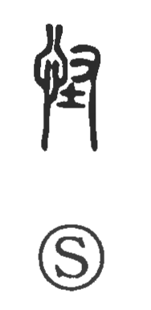

怪

Kun: ayashii, ayashimu | On: kai, ke
strange ・ suspicious ・ mysterious ・ to suspect
Explanation
怪 is a phonetic compound with 忄, the heart, on the left and 圣 on the right. 圣 supplies the sound. An associated oracle-bone graph places hands on either side of 土, the representation of an earth deity, and appears to depict a rite offered to that deity.
The word initially concerns uncanny manifestations of the earth and its spirits. With the heart element, 怪 names the response to what seems extraordinary or disturbing: finding something strange, wondering at it, or regarding it with suspicion. It also names the strange thing itself, including a monster or supernatural apparition.
The variant 恠 replaces the right-hand element with 在. That variant arose through a change in the written shape, while the older formation preserves 圣.